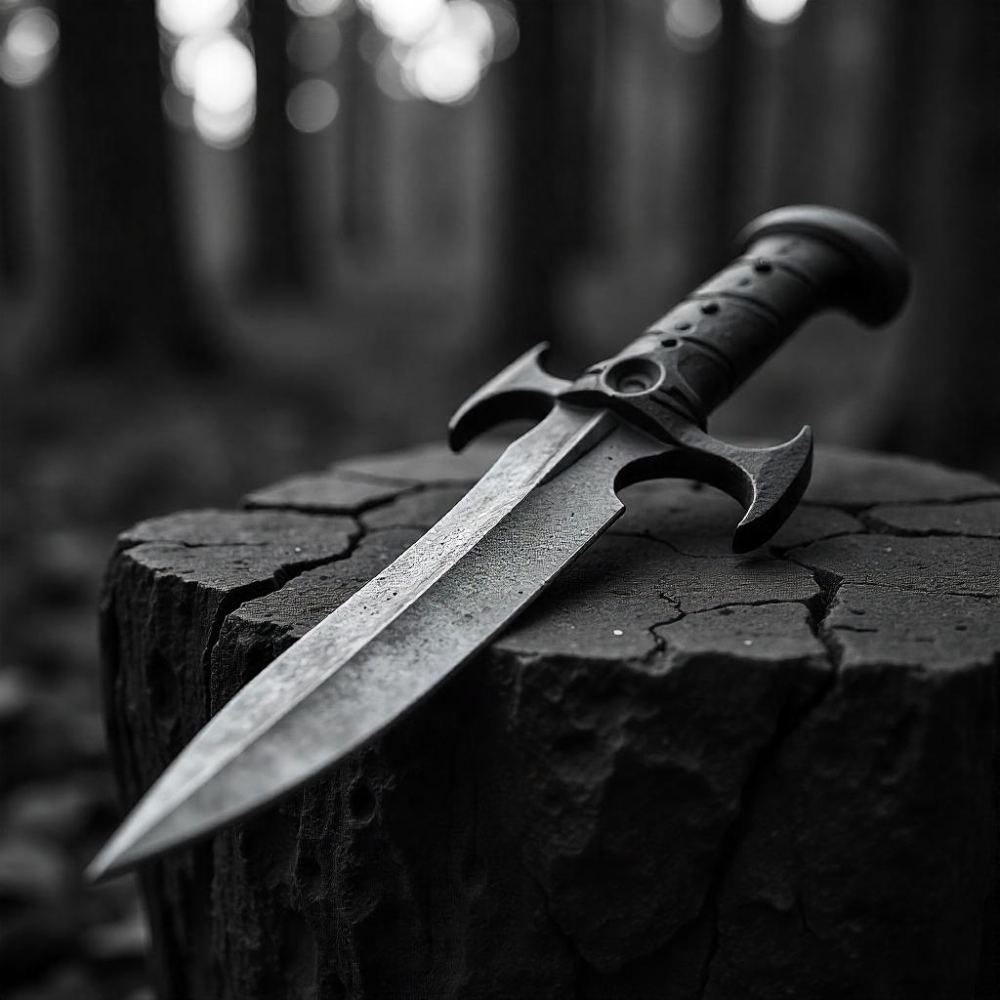
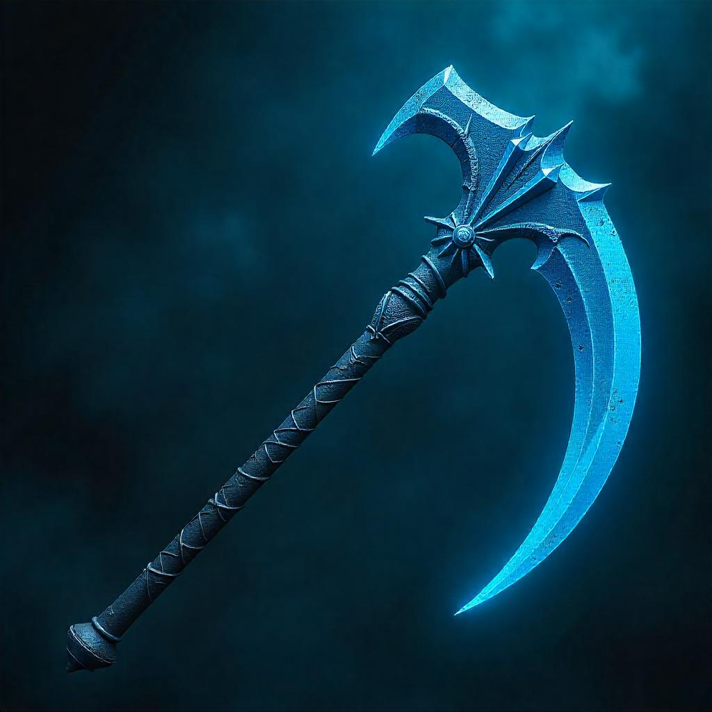
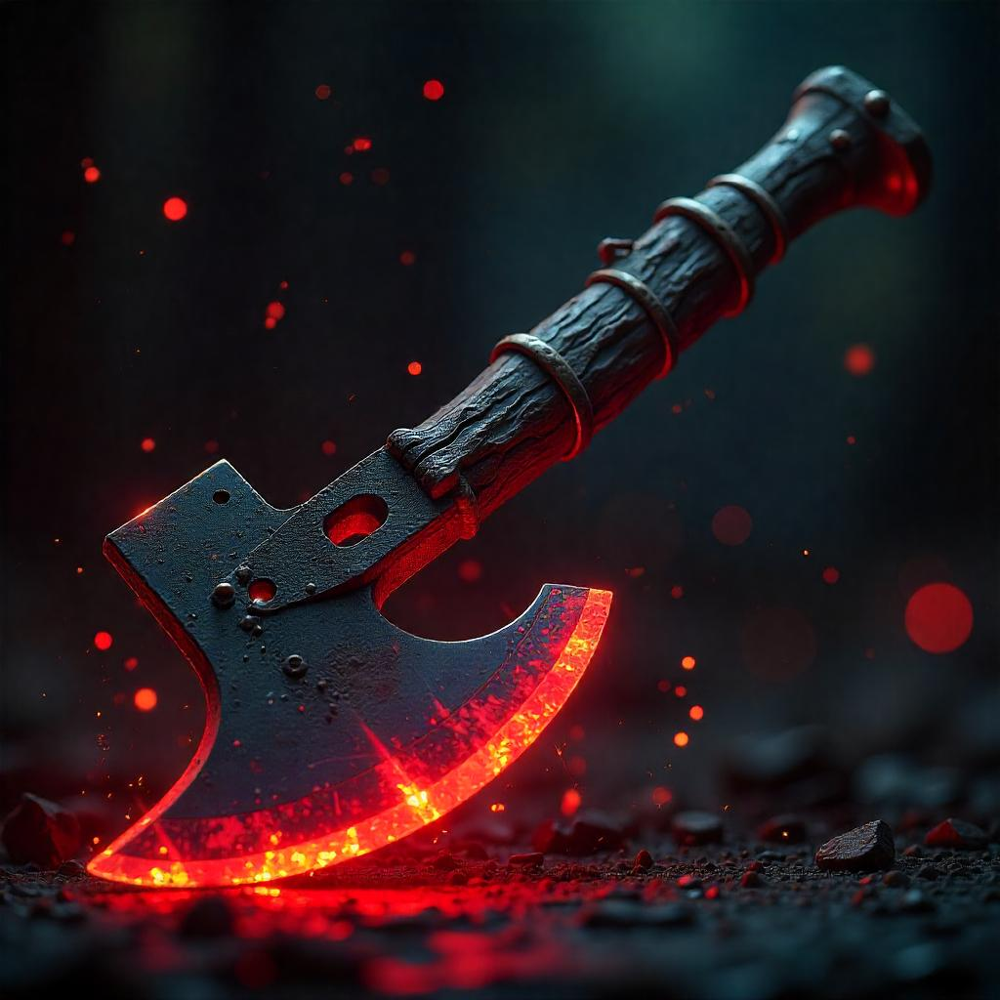

Shadowfang Forge

Iron Fang Dagger
Forged in the mountain forges of Halgar.

Steel Longsword
A finely balanced weapon made from tempered steel, the Steel Longsword is a staple of many knightly orders.

Orcish Cleaver
This crude but terrifyingly effective cleaver was designed by orc blacksmiths to maximize raw destruction. While lacking elegance, its sheer weight and brutal edge can cleave through armor and bone alike, making it a fearsome weapon on any battlefield.
×